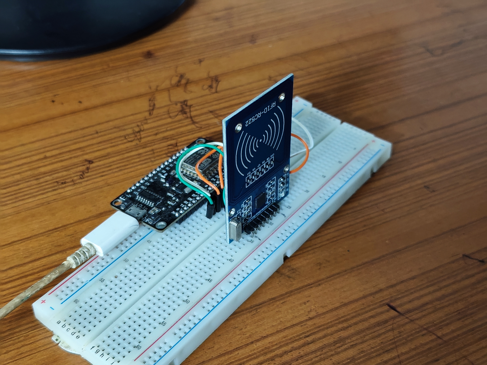
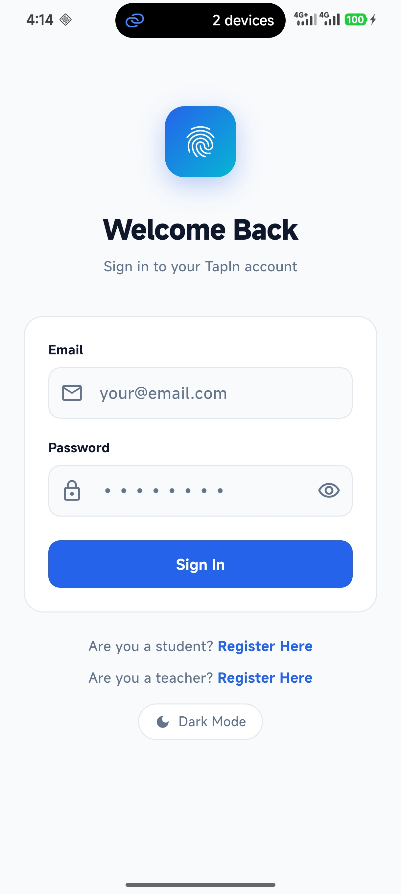

Course Code and Name: IRE 460, Mobile Platform for IoT Devices Sessional
Submitted by:
MD Naimur Rashid (2101042)
Sourav Chakraborty (2101031)
Submitted to:
Md. Rafiqul Islam
Lecturer, IRE
A full-stack IoT and Flutter ecosystem for seamless university attendance.
System Architecture
IoT Layer Deep-Dive

| RC522 | GPIO | Board |
|---|---|---|
| SDA (SS) | GPIO 15 | D8 |
| RST | GPIO 0 | D3 |
| MOSI | GPIO 13 | D7 |
| MISO | GPIO 12 | D6 |
| SCK | GPIO 14 | D5 |
| GND | GND | GND |
| 3.3V | 3.3V | 3V3 |
Backend Layer
{"rfid_uid":"EBACC836"}
Authentication Flow

01 / 11
Summary